LTR: Herman Cappelen, Murray Shanahan, John Hawthorne, Simon Goldstein, Daniel Herrmann, Geoff Keeling, Winnie Street, Paul Boghossian and Henry Shevlin. Minds, Meaning and Machines: New Work in the Philosophy of AI, Hong Kong University, 2026.
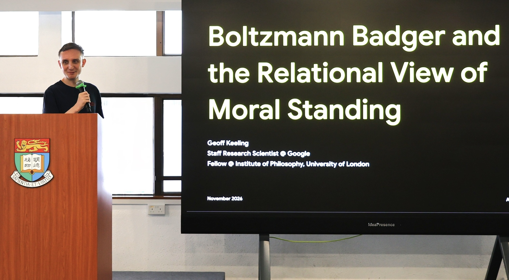
Minds, Meaning and Machines: New Work in the Philosophy of AI, Hong Kong University, 2026.
Winnie Street and Geoff Keeling. NYU Center for Mind, Ethics and Policy, New York, 2026.
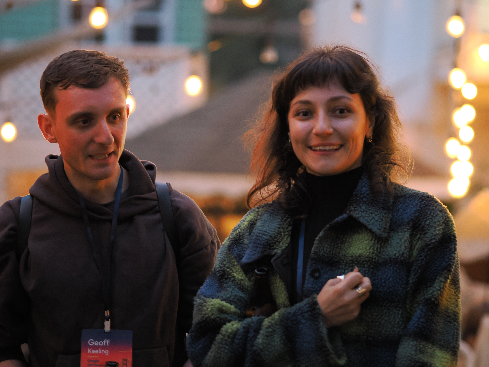
Geoff Keeling and Daria Zakharova. My face aptly demonstrating my characteristic sense of urgency. Eleos AI Conference on AI Consciousness and Welfare, Lighthaven, Berkeley, 2026.
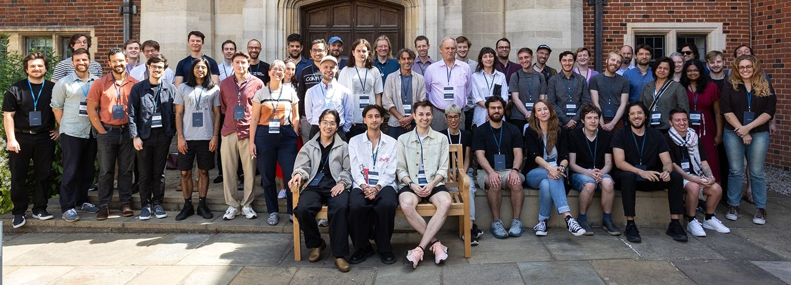
Cambridge Digital Minds Strategy Workshop, Jesus College, Cambridge, 2026.
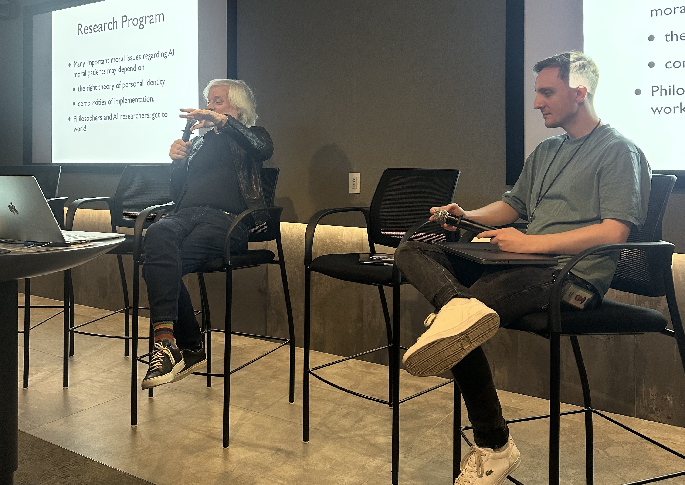
David Chalmers and Geoff Keeling. Workshop on AI Consciousness and Moral Patienthood, New York, 2025.
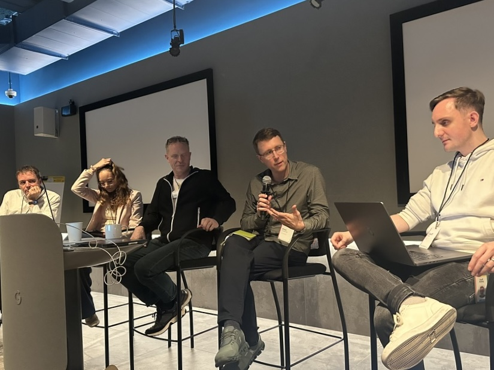
LTR: Joscha Bach, Anna Puzio, Herman Cappelen, Alex Grzankowski and Geoff Keeling. Workshop on AI Consciousness and Moral Patienthood, New York, 2025.
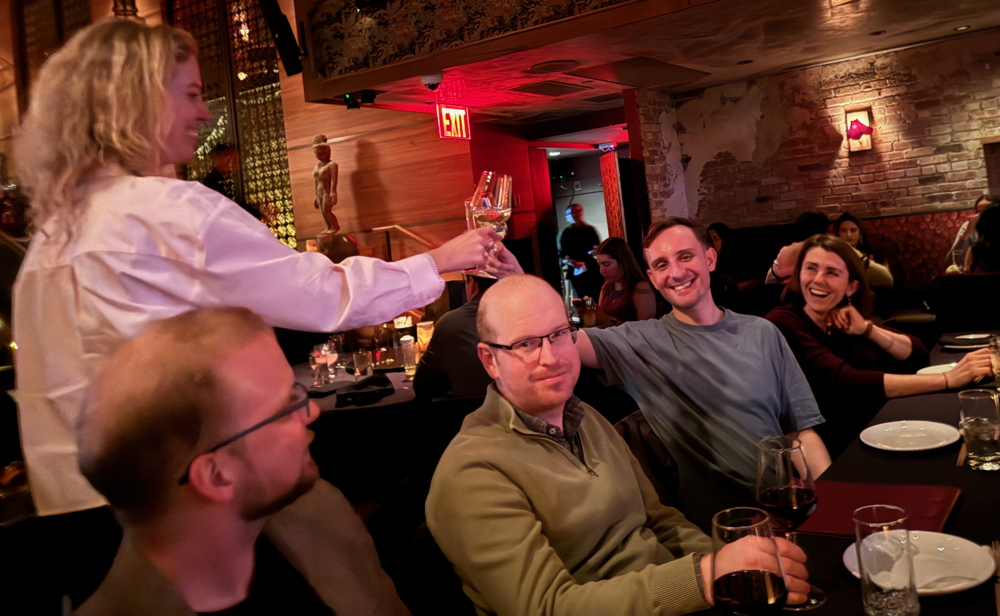
LTR: Jacy Reese Anthis, Winnie Street, Jonathan Birch, Geoff Keeling and Roberta Rocca. Workshop on AI Consciousness and Moral Patienthood, New York, 2025.
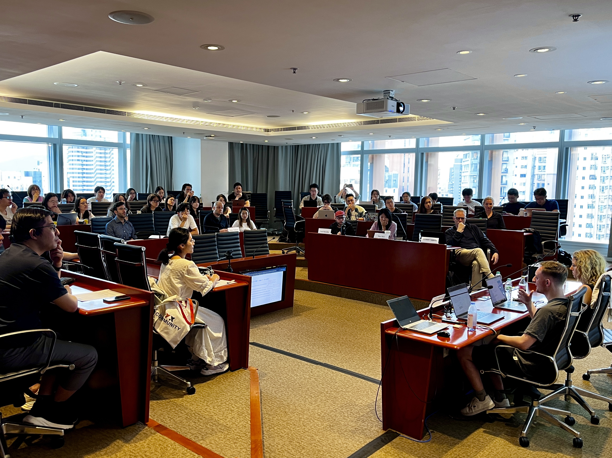
Geoff Keeling and Winnie Street. Book symposium on Emerging Questions in AI Welfare, Hong Kong University, 2025.
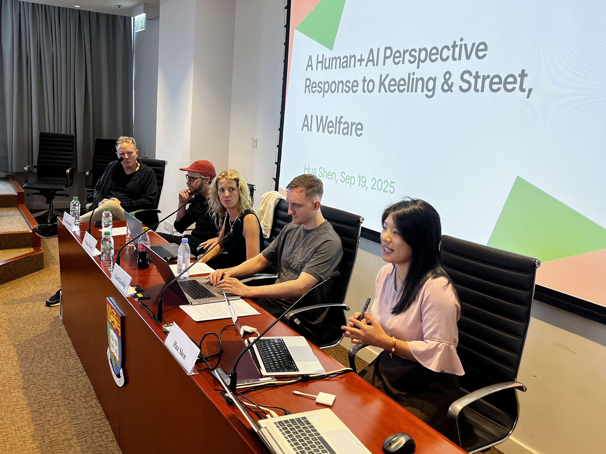
LTR: Herman Cappelen, Nate Sharadin, Winnie Street, Geoff Keeling and Hua Shen. Book symposium on Emerging Questions in AI Welfare, Hong Kong University, 2025.
Eleos AI Conference on AI Consciousness and Welfare, Lighthaven, Berkeley, 2025.
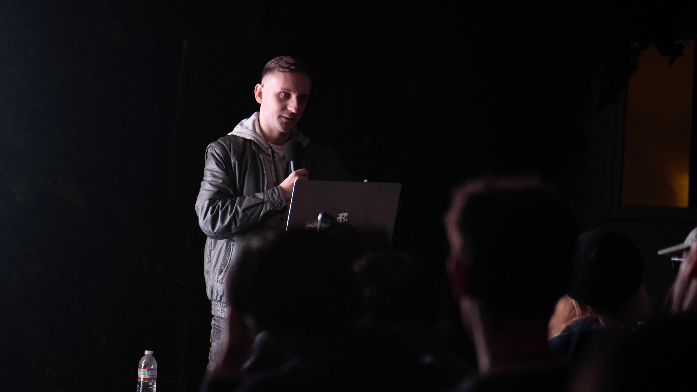
Eleos AI Conference on AI Consciousness and Welfare, Lighthaven, Berkeley, 2025.
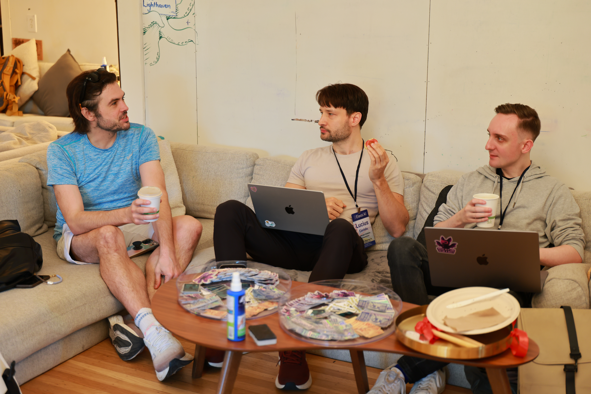
LTR: Henry Shevlin, Lucius Caviola and Geoff Keeling. Eleos AI Conference on AI Consciousness and Welfare, Lighthaven, Berkeley, 2025.
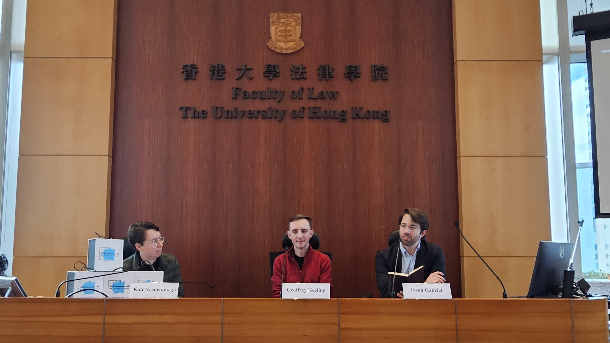
LTR: Kate Vredenburgh, Geoff Keeling and Iason Gabriel. Kate thought we were in Hong Kong to build forts, but we were actually there to discuss political philosophy. Themes from Iason Gabriel, Hong Kong University, 2025.